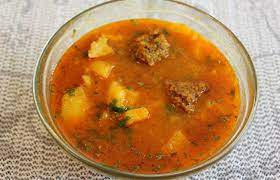

The food of Uttarakhand is dominated by Garhwali cuisine and Kumaoni cuisine, two of its main
regions. The dishes are simple and locally grown without being dominated by complex spices.
Some of the most famous dishes of Uttarakhand are cooked over a slow fire and consists of
lentils.
Have a look at the scrumptious food of Uttarakhand hidden in this land of natural
beauty:
1. Kafuli
This dish is a boon for all the diet-conscious people out there. Yes, it is actually that nutritious. Kafuli is a famous food of Uttarakhand prepared of Spinach and fenugreek leaves. This exotic dish is prepared in an iron kadhai and complemented by hot steaming rice. It is the most nourishing and health-conscious dish you will come across in the state.

2. Bhang Ki Chutney
We are not kidding! There is chutney made in Uttarakhand that is actually bhang ki chutney. It simply enhances the taste of every other cuisine and its fresh aroma and tangy taste will linger in your mouth long after you have consumed it. It is prepared of Hemp Seeds which provides it with the characteristic aroma. Already feel your mouth-watering?

3. Garhwal ka Fannah
This heavenly Uttarakhand food is a staple of Mussoorie and is good enough to satiate both your eyes and stomach. It happens to be one of those dishes that will simply leave you craving for more. Since it is so divine in its taste and aroma, Garhwal Ka Fannah has become a must food item in the menu card for every occasion that takes place in Uttarakhand.

4. Phaanu
Phaanu is a dish that is famous mostly in the Garhwal region of Uttarakhand. It is rather complicated to prepare since it is made by mixing lentils of different varieties that are soaked in water overnight. It is a kind of soupy dish, served mostly with rice. The unique flavour of Phaanu will definitely be a treat for your taste buds!

5. Baadi
Baadi is a famous Uttarakhand food that has mesmerised the locals and tourists for a long time, mainly by its lingering aroma and tangy taste. This dish is as simple as the people of Uttarakhand. It is bequeathed with all the essential nutrients that are hard to find in one dish altogether. It is abundant in Vitamin B12 and Vitamin A among others. What more can we ask for, when we get nutrients and taste in a single delicacy!

6. Kandalee Ka Saag
This food of Uttarakhand which is highly popular among visitors and tourists is none other than the Kandalee Ka Saag. It is a green leafy vegetable prepared in an ordinary way like all the other vegetables, but the leafy vegetable called “Bicchu Ghas” is what makes it different. Like all other dishes of Uttarakhand, this too is rich in nutrients.

7. Chainsoo
If you have been to Uttarakhand you might have heard of Chainsoo. It is a very famous Garhwal dish which is made of Urad or Kali Dal and thus consists of a lot of protein. Many people find it hard to digest, but this dish has a totally earthy flavour which is definitely worth trying. It is tasty enough to give a tough competition to Punjabi’s Maa Ki Dal!

8. Kumaoni Raita
Like the Bhang ki Chutney, Kumaoni Raita is yet another dish that accompanies every other cuisine of Uttrakhand. The locals of this state can’t do without Kumaoni Raita which is prepared from curd, turmeric, and cucumber. The goodness of cucumber is an asset for your system, but the heavenly taste beats it all.

9. Dubuk
Touted as one of the best dishes of Uttarakhand, Dubuk makes the people a fan by its indescribable taste. It is a preparation of Dal and is best served with rice. You might think what’s so special about a normal delicacy prepared of Dal. Well, Dubuk is here to change your perception. Though the suitable time to eat Dubuk is during winters, who can stop you from savouring it all throughout the year.

10. Jhangora Ki Kheer
When talking about delicacies how can we not mention the desserts! This is one famous sweet dish of Uttarakhand. Jhangora is a type of millet that is the main ingredient of this dessert. Jhangora Ki Kheer has an unforgettable taste and is a must-try after a heavy meal of the Garhwali cuisines. Its rich texture and the goodness of milk will leave you asking for more.

11. Gulgula
Yet another dish that is highly popular among tourists and visitors, Gulgula is a delectable sweet of Uttarakhand. It is a sweet local snack made of jaggery which traces its origin to the Garhwal region. This is a very common dish you will find in the State since it uses extremely basic ingredients that are available in the immediate vicinity of the local people. Gulgula has eventually found its place in the delicious desserts in many parts of Northern India.

12. Arsa
Arsa is the most famous dessert in the Uttarakhand region. It has come to occupy a permanent place in every household in the State. This sweet dish is high on the taste meter and low on the calorie meter which makes it so hugely popular. No festival or occasion in Uttarakhand is complete without the magnanimous presence of Arsa. Do we need to say more about this one?!

13. Singori
Singori also called Singodi / Singauri
is a widely known sweet dish in Uttarakhand that’s made with Khoa, a dairy product of thickened milk
which is wrapped in a Maalu leaf. It is a cone-shaped sweet savoury that’s available in Almora the
Kumaon region of Uttarakhand.

14. Thhatwani/Ras
A fine soup with a mix of rice paste, lentils stock and pulses that are cooked in an iron vessel. The pulses are soaked in water overnight which is later boiled and cooked with herbs and masala in an iron kadhai. This high in protein dish is best served with hot steamed rice.
15. Aloo Gutuk

A typical Indian dish that’s made in every household, but it wouldn’t be an exaggeration if it came to be called a regional food of Uttarakhand. Coupled with Bhang ki chutney, Pooris and Kamaoni Raita, this dish will give your soul what it needs. An effortless dish of boiled potatoes garnished with coriander and red chillies this dish is a must-try.
16. Aloo ka Jhol

Jhol means ‘thin gravy’ in Hindi. Aloo ka Jhol is a potato recipe served with pooris or chapatis that has many variants. It is also called as Aloo rasedar, mathura ke dubki wale aloo, poori bhaji, poori masala and so on.
So here is yet another reason to visit the land of natural beauty (as if you needed one!). The next time you are in Uttarakhand, don’t miss out on these delectable cuisines, because as we say “time and food waits for none”!